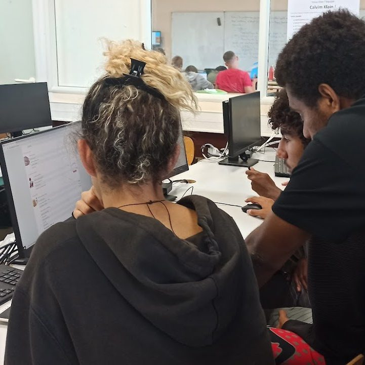

Formation · Bac +2 · Informatique
Service
Informatique aux
Organisations
Le BTS SIO au lycée Dick Ukeiwë forme aux métiers de l'informatique en entreprise, avec des compétences en développement d'applications et en administration des réseaux avec la possibilté en deuxième année d'être en alternance. Il propose deux spécialités :
- SLAM, Solution Logiciel et Application Métier, pour le développement logiciel,
- SISR, Solution Infrastructure et Système Réseau, pour la gestion des infrastructures.
Cette formation prépare à concevoir, déployer et maintenir des solutions informatiques adaptées.


BTS SIO : Créez le logiciel, maîtrisez l'infrastructure